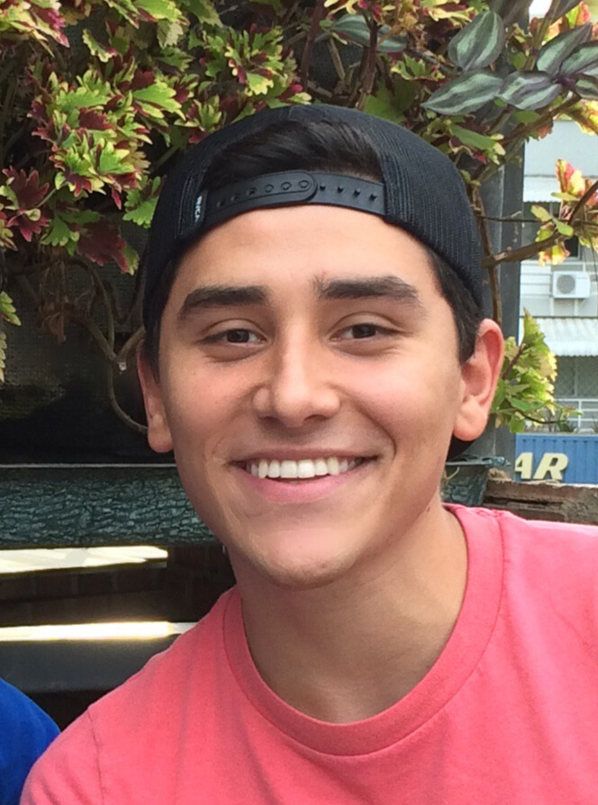

I currently live in Toronto. I grew up in Venezuela and previously studied at TMU.
Email: husseinserhan3012@gmail.com.
Things I'm involved with and areas of interest:
- Community Building. Through River, I contribute to the organization of the Tim Ferriss meetup in Toronto.
Elsewhere
HusseinSerhan on GitHub; HusseinSerhan_ on Twitter.
Interviews
There is a project I am working on interviewing some of the interesting people that I get to meet in Toronto.